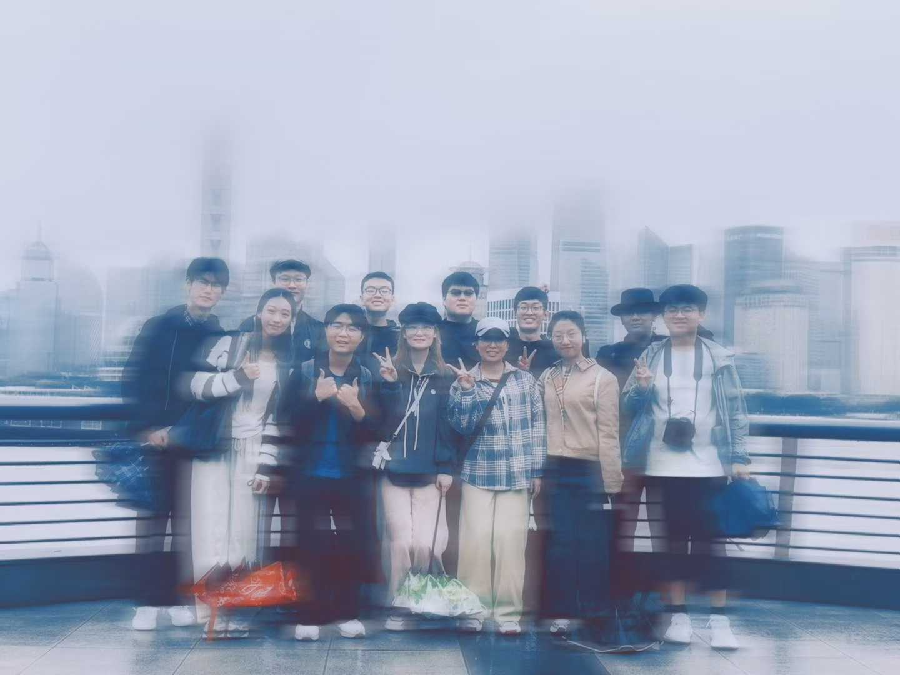

探星阁社区
探星阁社区旨在搭建一个交流学习、分享经验、互相成长的平台。这里既有他人的成长故事、心路历程，也有学习经验、学习方法，还有学习工具的分享、使用教程等等。欢迎进入探星阁的大家庭！也欢迎投稿分享你的成长故事！
科研之友

手把手教你养龙虾｜Openclaw纯干货操作指南（一）
成长故事

探星阁社区旨在搭建一个交流学习、分享经验、互相成长的平台。这里既有他人的成长故事、心路历程，也有学习经验、学习方法，还有学习工具的分享、使用教程等等。欢迎进入探星阁的大家庭！也欢迎投稿分享你的成长故事！
